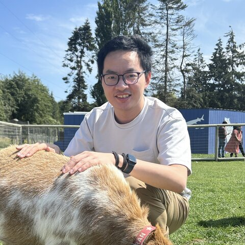
Runxue Bao
Machine Learning Engineer @ Google Search
Recommender Systems · LLM & Agents · Efficient ML
About
I am a Machine Learning Engineer at Google Search, where I work on personalized recommendation and AIGC quality for Search Discover and Notification, serving billions of users.
I received my Ph.D. in Computer Engineering from the University of Pittsburgh and my Honours B.S. in Electrical Engineering from the University of Science and Technology of China (USTC). I have published 30+ papers at leading venues, including NeurIPS (×2), EMNLP (×4), NAACL (×2), ICML and CVPR, with 600+ citations and an IEEE ICHI 2024 Best Paper Award 🏆.
Open to research collaborations, feel free to reach out.
Experience
-
Google2025 – PresentMachine Learning Engineer, SearchPersonalized recommendation and AIGC quality for Search Discover & Notifications.
News
- 2026.09Paper on multi-LLM collaboration for test-time scaling accepted to NeurIPS 2026.
- 2026.08Paper on confidence-aware memorization control accepted to EMNLP 2026 (Main).
- 2026.07Survey on heterogeneous transfer learning accepted to Knowledge-Based Systems.
- 2025.09Paper on LLM-as-a-Judge debiasing accepted to NeurIPS 2025.
- 2025.08Paper on controllable LLM memorization via pruning accepted to EMNLP 2025 (Main).
- 2025.05Paper on sparse optimization accepted to ECML PKDD 2025.
- 2025.01Paper on retrieval-augmented in-context learning accepted to NAACL 2025 (Main).
Show older news
- 2025.03Paper on sparse optimization accepted to IJCNN 2025.
- 2024.12Paper on temporal domain adaptation accepted to SDM 2025.
- 2024.11Paper on LLMs & transfer learning accepted to AMIA 2025 Informatics Summit.
- 2024.09Two papers on LLM memorization and knowledge-graph-enhanced LLMs accepted to EMNLP 2024.
- 2024.06🏆 Paper on online transfer learning received the ICHI 2024 Best Paper Award (Analytics Track).
- 2024.05Paper on graph neural networks accepted to MICCAI 2024.
- 2024.03Papers on LLM pruning and online transfer learning accepted to NAACL 2024 and IEEE ICHI 2024.
- 2024.02Paper on model compression accepted to CVPR 2024.
- 2024.01Two papers on transfer learning and multimodal learning accepted to ISBI 2024.
- 2023.08Paper on online pairwise learning accepted to IEEE TNNLS.
Selected Publications
* equal contribution. Full list on Google Scholar.
-
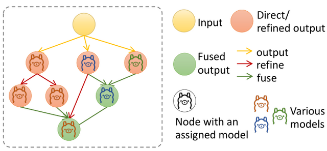
Generalizing Test-Time Compute-Optimal Scaling as an Optimizable Graph -
EMNLP
2026Enabling Confidence-Aware Control of Effective Memorization in Large Language Models -
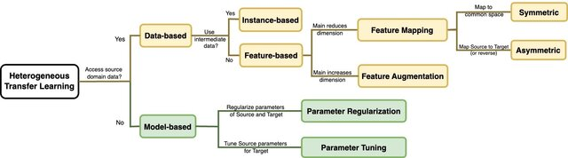
A Recent Survey of Heterogeneous Transfer Learning -
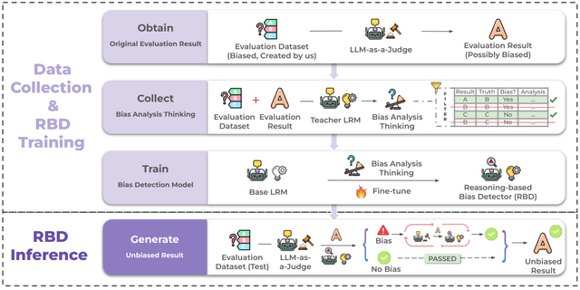
Any Large Language Model Can Be a Reliable Judge: Debiasing with a Reasoning-based Bias Detector -
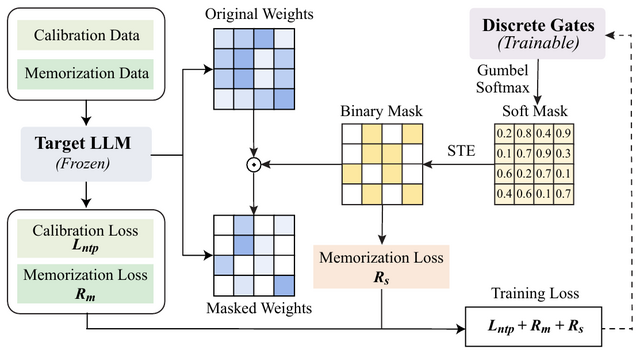
Controllable Memorization in LLMs via Weight Pruning -
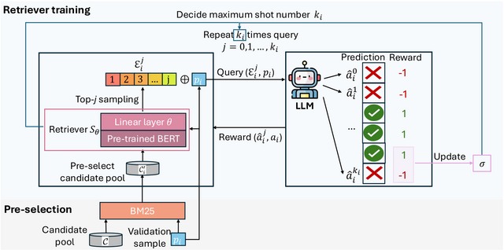
Dynamic Uncertainty Ranking: Enhancing In-Context Learning for Long-Tail Knowledge in LLMs -
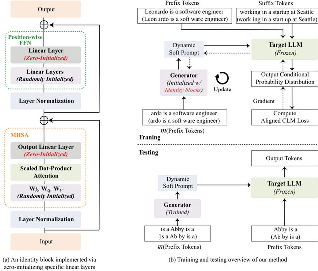
Unlocking Memorization in Large Language Models with Dynamic Soft Prompting -
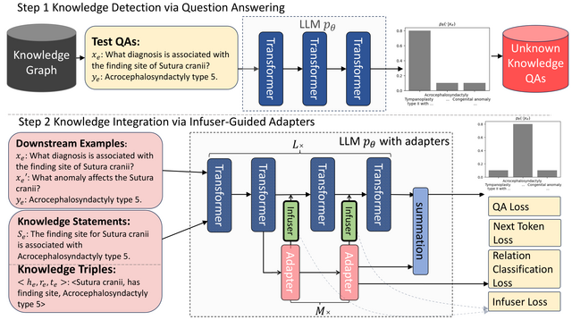
InfuserKI: Enhancing Large Language Models with Knowledge Graphs via Infuser-Guided Knowledge Integration -
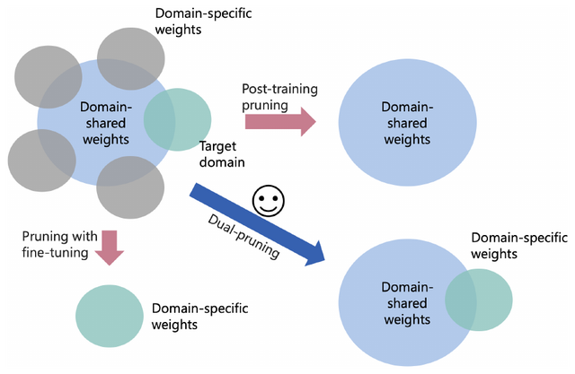
Pruning as a Domain-specific LLM Extractor -
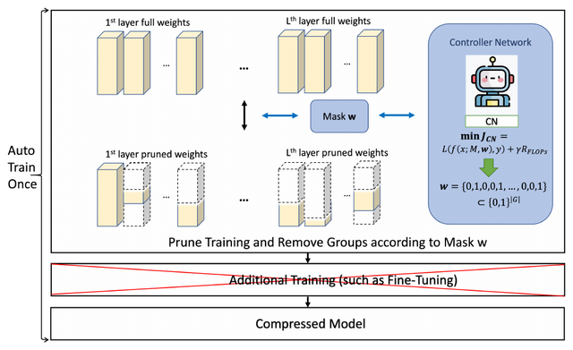
Auto-Train-Once: Controller Network Guided Automatic Network Pruning from Scratch -
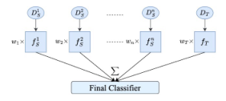
Online Transfer Learning for RSV Case Detection -
CIKM
2022An Accelerated Doubly Stochastic Gradient Method with Faster Explicit Model Identification -
IJCAI
2022Doubly Sparse Asynchronous Learning for Stochastic Composite Optimization -
ICML
2020Fast OSCAR and OWL Regression via Safe Screening Rules
Professional Service
- Conference Program Committee or Reviewer: NeurIPS, ICML, ICLR, CVPR, ECCV, KDD, ACL ARR, AAAI, IJCAI, WSDM, AISTATS
- Journal Reviewer: IEEE Transactions on Big Data, Patterns, Briefings in Bioinformatics, Artificial Intelligence in Medicine